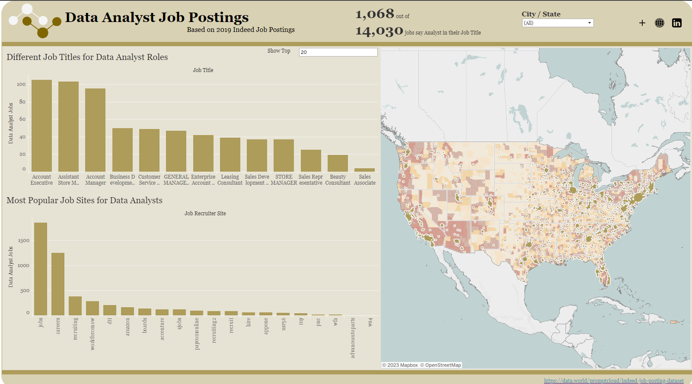

Summary

After graduating Brigham Young University in 2017 with a degree in Statisitics I have pursued a career in Data Analytics. In 2020 to continue my pursuit, I graduated from Southern New Hampshire University with a degree in Data Analysis. I’ve worked in several smaller companies performing data analysis tasks and have moved into a career now where I feel comfortable and knowledgeable in this field.
As I look to my future and what my goals are for the future I’ve been tasked with the question on what do I need to build upon to grow in my career. One example is what do I need to accomplish to become a Senior in my field.
The primary objective of this project I’ve done is to evaluate the distinct skill sets and experiences that differentiate a Senior Data Analyst from a Data Analyst. By examining various facets such as technical proficiencies and experience levels, I aim to construct a unique view of the skill and experience needed towards seniority in data analysis roles.
With this project I have gathered Data Analyst job postings from Google using SerpAPI and Python. After that I’ve been able to model and format the data within a view in SQL so that it can be easily read and used within Tableau. Here I want to perform a simple, but powerful analysis on the following…
What programming language is in larger demand? (R vs Python vs SQL)
What BI platform is in larger demand? (Tableau vs Power BI vs Looker)
What are the qualifications to be hired as a Senior Data Analyst?
Years of Experience
Education Level
Required Skills
The project aims to provide a robust comparative analysis of the skills and experiences necessary for transitioning from a Data Analyst to a Senior Data Analyst. The outcomes will serve as a valuable guide for aspiring data professionals, like myself, seeking to structure career development paths in the realm of data analysis. Ultimately, this project will contribute to a better understanding of the evolving career path for Data Analysis and the critical factors that underpin career progression in this dynamic field.
Analysis
R vs Python vs SQL
In the competitive field of data analysis, possessing a robust skill set in SQL, R, and Python significantly enhances job prospects. SQL proficiency is considered a foundational requirement, with half of the job postings emphasizing its importance. Python, with its broad applications and extensive library support, is a highly sought-after skill, demanded in more than a quarter of the analyzed postings. R, though less frequently requested, remains vital for specific roles emphasizing statistical analysis and visualization.
As I went to school for Statistics and Data Analysis there was a huge emphasis on an academic side to learn and utilize R over Python. With this comparison though we can see, due to it’s versatility, Python is leading over R as a language recruiters are asking of future analysts.
Prospective Data Analysts should consider honing their skills in all three languages to broaden their opportunities and cater to a variety of job requirements. Continuous learning and adaptability to evolving technologies are key factors to stay ahead in the competitive job market for data analysis roles.
Tableau vs Power BI vs Looker
The significance of Business Intelligence platforms in the data analysis profession is evident, with a notable portion of job postings emphasizing proficiency in Tableau, Power BI, and Looker. Tableau, as the most in-demand platform among the three, underscores its importance in data visualization, aiding effective storytelling with data and stronger visualization potential. Power BI follows closely, being an essential tool for Data Analysts, especially within organizations utilizing Microsoft’s ecosystem and on a lower budget. The presence of Looker, though relatively lower, signifies a growing interest in cloud-based analytics and its role in data exploration.
Aspiring Data Analysts should consider acquiring proficiency in these BI platforms to enhance their employability and contribute effectively to data-driven decision-making within organizations and stakeholders. Continuous learning and staying updated with the latest features and advancements in these platforms are vital for a successful career in the evolving landscape of data analysis.
Senior Position Requirements
Education Requirements
The demand for higher education in the field of data analysis, specifically for Senior Data Analyst roles, is notable. Approximately half of the Senior Data Analyst job postings stress the need for a Master’s degree, highlighting the industry’s inclination towards candidates with advanced education and a strong analytical foundation. Meanwhile, a quarter of the postings emphasize the significance of a Bachelor’s degree, illustrating the enduring importance of foundational knowledge and skills in the data analysis profession.
As an aspiring Senior Data Analyst, I should recognize the value placed on education in this field and am glad I pursued a higher degree to enhance my professional opportunities. Moreover, continuous learning and staying updated with the latest advancements in skills and technologies are vital for a successful career progression, aligning with the evolving demands of the industry.
Years of Experience Requirements
A vast majority of job postings highlighting the necessity of a professional background exist for Senior Data Analysts. Specifically, 70% of the postings indicate a requirement for 4 to 5 years of prior experience in the data analysis field prior to consideration for the role. This can also be headed by a specific domain knowledge required for those 4-5 years. This underlines the industry’s emphasis on hands-on experience, domain expertise, and a proven track record of successfully tackling analytical challenges.
For aspiring Senior Data Analysts, the key takeaway is the critical importance of gaining substantial experience in the data analysis domain. Early-career professionals should proactively seek opportunities to accumulate relevant experience, engage in challenging projects, and continuously enhance their analytical skills to meet the stringent experience requirements of senior roles. Additionally, staying abreast of industry trends and advancements is crucial for building a successful career path in the dynamic field of data analysis.
I have currently been working in the data analysis field since 2017, but have only recently in the last couple years changed my domain expertise towards education. As I build up my domain knowledge I hope to anchor a position within my natural career advancement.
Skill Requirements
Skill requirements for the role of a Senior Data Analyst are comprehensive and essential, encompassing expertise in SQL, Tableau, Python, and many other technologies. SQL proficiency stands out with an overwhelmingly high demand, reinforcing its foundational role in data analysis. Tableau and Power BI, have been prominent tools for data visualization, is a crucial skill for effectively communicating insights to stakeholders. Additionally, Python, known for its versatility, finds substantial demand, emphasizing the need for proficiency in data manipulation and analysis.
Prospective Senior Data Analysts should prioritize honing their skills in those tools that seem to be gaining traction to meet the industry’s skill demands. Continuous learning, staying updated with the latest advancements, and adaptability to evolving technologies are critical for success in the dynamic field of data analysis at the senior level.
Conclusion
A detailed analysis of job postings has shed light on the critical skills and tools sought by employers. The findings from the exploration of job postings focusing on proficiency in SQL, R, Python, and Business Intelligence (BI) platforms such as Tableau, Power BI, and Looker are crucial for aspiring and existing Data Analysts.
I have found that the leading technologies for data analysts to become proficient in are SQL which is vital, Python over R due to it’s versatility, and Tableau or Power BI which can vary depending on what company you are applying to.
The journey to becoming a Senior Data Analyst demands a nuanced understanding of the skills, experiences, and qualifications that employers prioritize in this role. Our exploration into Senior Data Analyst job postings has unearthed crucial insights regarding skill requirements, educational backgrounds, and prior experience needed to excel in this position. With this knowledge I can better prepare myself to grow into this position by doing the following…
Gaining more years of experience in my domain of Education
Building up my skills within popular and upcoming tools such as SQL, Python, Tableau, and Power BI
Tools
Github

I utilize GitHub as a way to collaborate with others to show them personal projects and host static websites to view these projects. Within this repo you can view the tools, assets, and code used in this project. Some of which include but are not limited to R Scripts, Tableau Workbooks, Image Files, Data Files, etc… Please feel free to take a look at projects I have listed and test them out for yourself!
Tableau

Tableau Public is a platform created by Tableau for users to share interactive visualizations with a public community. Tableau has been an area where creativity meets data and being able to communicate/present the data in a way that is appealing to others has always been my goal. Here I published a dashboard to show the results of the survey being taken. Please take a look!